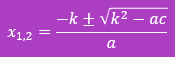

Неповні квадратні рівняння
Неповні квадратні рівняння мають два види:
- Якщо с=0 , 𝑎𝑥2+𝑏𝑥=0
Розв’язати таке рівняння можна розклавши на множники (винести за дужки х):
𝑥∙(𝑎𝑥+𝑏)=0
𝑥=0 або (𝑎𝑥+𝑏)=0
Отже, один корінь дорівнює 0, а другий корінь
𝑥=(−𝑏)/𝑎
(оскільки добуток двох чисел дорівнює 0 лише тоді, коли хоча б один із множників дорівнює 0)
- Якщо 𝑏=0,𝑎𝑥2+𝑐=0
Розв’язати таке рівняння можна добуваючи корінь із кожної частини рівняння:
(𝑎𝑥)2=−𝑐
𝑥2=(−𝑐)/𝑎 |
Добуваючи корінь із лівої частини рівняння отримуємо 𝑥 за модулем |𝑥|=√((−𝑐)/𝑎). Це означає що:
𝑥1=√((−𝑐)/𝑎) ; 𝑥2=−√((−𝑐)/𝑎)
Ми з тобою вже звикли, що корені квадратного рівняння а𝑥2+𝑏𝑥+𝑐=0 можна визначити за формулою:
𝑥1,2=(−𝑏±√(𝑏2−4𝑎𝑐))/2𝑎, звісно це можливо, якщо дискримінант 𝐷=𝑏2−4𝑎𝑐 − невід’ємне число, якщо ж 𝐷<0
формула не має сенсу, а квадратне рівняння не має дійсних коренів
Але математики ніколи не оминають можливості полегшити собі обчислення.
Вони виявили, що формулу 𝑥1,2=(−𝑏±√(𝑏2−4𝑎𝑐))/2𝑎 можна спростити у випадку, коли коефіцієнт 𝑏 є парним числом
Нехай у квадратного рівняння а𝑥2+𝑏𝑥+𝑐=0 коефіцієнт 𝑏 має вигляд 𝑏=2𝑘
Корені квадратного рівняння можна обчислити за формулою:

У чому переваги?
- По-перше, до квадрату підноситься не саме число 𝑏, а його половина 𝑘=𝑏/2
- По-друге, віднімається з цього квадрату не 4𝑎𝑐, а просто 𝑎𝑐
- По-третє, у знаменнику міститься не 2𝑎 , а просто 𝑎
Особливо приємно формула виглядає для випадку коли 𝑎=1, тоді отримуємо:𝑥1,2=−𝑘±√(𝑘2−𝑎𝑐)
Це формула коренів рівняння 𝑥2+2𝑘𝑥−𝑐=0